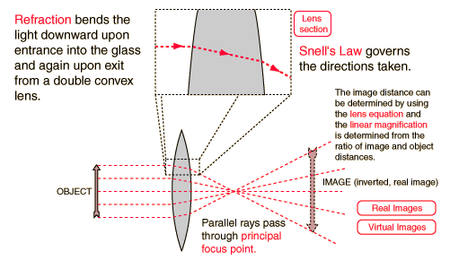

Image Formation
This is an active graphic. Click on the buttons or highlighted text for further detail.

Reversing object and image positions: conjugate points
Index
Lens concepts
HyperPhysics
*****
Light and Vision
R Nave
Go Back